Klar til at udforske Vandmandens unikke univers? Med din trang til frihed og nysgerrighed
skiller du dig ud som en ægte original! Som lufttegn tænker du kreativt og udfordrer normer, hvilket gør dig til
en
inspirerende og innovativ ven. Oplev, hvordan din tilgang kan åbne døre til nye eventyr og forbindelser!
KÆRLIGHED
I kærlighedens verden er det tid til at slippe din indre romantiker fri! Er du single, kan en spændende
forbindelse være tæt på - vær åben for spontane eventyr. Hvis du er i et forhold, så lad kreativiteten
stråle og
overrask din partner. Husk at nyde øjeblikket og have det sjovt!
KARRIERE
Karrieren ser lys ud for Vandmanden! Din nysgeerighed og innovative natur vil skille sig ud i en
konkurrencepræget verden. Del dine idéer og lad dine unikke perspektiver lede dig mod nye muligheder.

ØKONOMI
Tænk smart med økonomien! Små investeringer i dine interesser kan betale sig. Udnyt dine færdigheder til at
tjene ekstra, f.eks. gennem freelancearbejde eller små projekter, der både er sjove og giver økonomisk
gevinst.
DIN ASTROLOGISKE PROFIL
Velkommen til astrologiens verden! Din 'Big Three' - soltegn, månetegn og ascendant -
former din unikke personlighed. Soltegnet viser, hvem du er, månetegnet afslører dine følelser, og ascendanten
viser, hvordan du fremstår udadtil.
Indtast din fødselsdato og -tid for at beregne dine 'Big Three'.
Kl:
:
SOLTEGN
Med Vandmanden som dit soltegn er du en sand original! Som et lufttegn er du uafhængig, nysgerrig og fyldt
med
innovative ideer. Du elsker at tænke uden for boksen og har en dyb interesse for menneskehedens
velbefindende.
Dine unikke perspektiver og sociale ånd gør dig til en inspirerende ven.
MÅNETEGN
Med dit månetegn i Krebsen er du et meget følende menneske!
Det betyder også at dine dybeste behov handler om følelsesmæssig nærhed og tryghed. Din intuition og empati
er
stærke, og du skaber gerne et varmt og trygt rum for dem, du holder af.
ASCENDANT
Med Skorpionen som ascendant er du intens og gådefuld, og folk mærker hurtigt, at der er dybde bag facaden.
Din
aura udstråler magnetisk tiltrækning og stille styrke, og du søger altid autenticitet i alt, du gør.
SOLTEGN
Med Løven som dit soltegn stråler du som en ægte stjerne! Løven er et ildtegn, hvilket betyder at du er
selvsikker, kreativ og fuld af livsglæde. Du har en naturlig evne til at lede og inspirere andre, og du
elsker at dele dine passioner. Med et stort hjerte og en forkærlighed for det dramatiske, er du altid klar
til at tage spotlightet.
MÅNETEGN
Med dit månetegn i Tyren gør dig til en sand livsnyder med en forkærlighed for
komfort og stabilitet. Tyren er et jordtegn, hvilket betyder at dine følelser er dybe
og jordnære. Din tålmodighed og beslutsomhed gør dig til en trofast ven, hvilket
også giver dig evnerne til at skabe rare omgivelser så folk føler sig hjemme.
ASCENDANT
At have Vædderen som ascendant betyder, at du møder verden som en sand pioner! At have et ildtegn som
ascendant gør, at folk ser dig som stærk, handlekraftig og altid klar på nye udfordringer. Din tilgang
er direkte og energisk. Denne ildfulde ascendant gør dig til en naturlig leder og eventyrer.
DEL MED VENNERNE
Dine 'Big Three' - soltegn, månetegn og ascendant - giver dig en unik indsigt i, hvem du
er. Udforsk disse aspekter for at opnå dybere selvforståelse og forbedre dine relationer.
Del din rejse med dine venner på sociale medier ved at scanne QR-koden og lad dem opdage
deres personlige astrologiske univers.